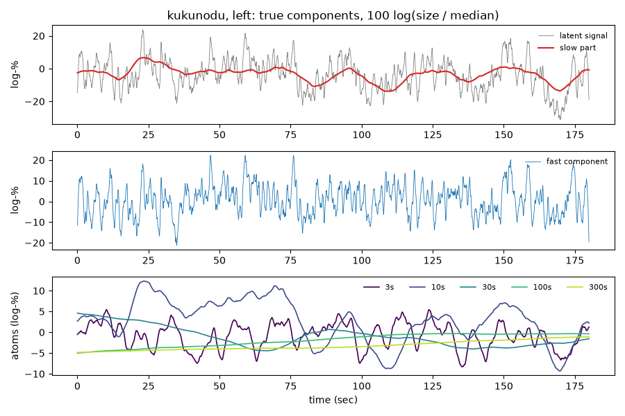
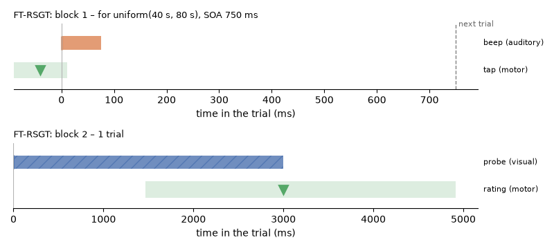

Simulated data#
Simulated recordings are useful whenever the true signal has to be known:
to test a preprocessing method, to compare methods, or to check that a
model finds its own parameters again. pypillometry.sim builds such
recordings step by step and keeps the ground truth with the data.
Experimental
The latent pupil size is drawn from the timescale model (Slow and fast fluctuations of the pupil: the timescale model), which is experimental. The API of the simulations may still change.
A simulation is a recipe#
A Simulation describes the recording (duration, sampling rate,
eyes, seed and, if needed, the experimental setup) and is built by chaining
steps. Each method returns a new simulation with one more step; the
recipe is only run by run():
import pypillometry as pp
sim = (pp.sim.Simulation("5 min", fs=500, eyes=["left", "right"], seed=1)
.pupil(binocular=True) # latent pupil size (timescale model)
.units(median=800) # units of the eye tracker
.noise(0.2)) # white measurement noise (log-%)
d = sim.run() # a SimEyeData object
Because each method returns a new simulation, a base recipe can be varied without changing it:
base = pp.sim.Simulation("5 min", fs=500, seed=1).pupil().units(800)
clean, noisy = base.noise(0.1).run(), base.noise(1.0).run()
The steps run in a fixed order, whatever the order in which they were added. The signal is in log-% (\(100 \log(\text{size} / \text{median})\)) until the units step:
Stage |
Method (step) |
What it does |
|---|---|---|
latent pupil |
|
fast component and slow components at fixed time scales, in log-%;
with |
gaze |
|
fixations at random places on the screen |
foreshortening |
|
the pupil as seen by the camera, \(A_0 \cos\alpha\); needs the
gaze and |
units |
|
from log-% to the units of the tracker (default: median 1000) |
occlusion |
|
blinks: the lid covers the pupil; the tracker loses it while most of it is covered |
noise |
|
white noise, multiplicative ( |
missing |
|
short losses of the pupil without transient; then all samples without pupil are set missing (also in the gaze) |
The parameters of TimescalePupil are those of
TimescaleModel.params;
parameters that are not given are the centre of the general prior,
i.e. typical values from real recordings.
The data and the ground truth#
run() returns a SimEyeData object. It is an
EyeData object, so all methods and plots work, with
two additions:
d.truthThe true time series, one value per sample, in an
EyeDataDict. They are cut, downsampled and saved together with the data, but the preprocessing does not change them:pupilthe pupil as measured without noise (units of the data)
sizethe true pupil size (differs from
pupilwith foreshortening)cosalphathe foreshortening factor
log_sizethe latent signal in log-%, the sum of the components:
log_fast,log_diff,log_3s, …fast component, difference between the eyes, atoms (log-%)
log_slowthe atoms with time scales of at least the cutoff of
TimescalePupil(default 10 s)occlusionthe fraction of the pupil covered by the lid (blinks)
d.truth_eventsThe true artifacts as
Events:"blink"and"loss"per eye, with their parameters as metadata. They follow cropping and the removal of periods with the data.d.simulationThe recipe with the seed that was used.
d.simulation.run()makes the same data again,d.simulation.run(seed=2)new data from the same recipe.
The plots d.plot.plot_truth() (data and true pupil) and
d.plot.plot_components() (the true components) show the ground truth:

Tasks and events#
A Task describes the design of an experiment and makes the events
of the simulated recording. It is built by chaining, like the simulation:
block() starts a block of trials, stimulus() and
response() add events to each trial of the block,
rest() adds a pause and repeat() repeats the blocks.
Times are fixed ("250 ms") or distributions
("uniform(2 s, 10 s)", "normal(500 ms, 30 ms)",
"lognormal(350 ms, 70 ms)", "exponential(1 s)"):
sart = (pp.sim.Task("SART")
.block(n=225, soa="1150 ms", conditions={"go": 8/9, "nogo": 1/9})
.stimulus("digit", "visual", duration="250 ms",
meta={"digit": {"go": [1, 2, 4, 5, 6, 7, 8, 9], "nogo": [3]}})
.stimulus("mask", "visual", at="250 ms", duration="900 ms")
.response("press", after="digit", rt="lognormal(350 ms, 70 ms)",
p={"go": 0.97, "nogo": 0.3}))
d = pp.sim.Simulation(fs=500, seed=1).task(sart).pupil().units(800).run()
Trials are spaced by
soa(from onset to onset) orisi(from the end of a trial to the next onset), forntrials or aduration.conditionsare drawn per trial.Events start at
atafter the start of the trial orafteranother event (the reaction timertof responses, which can be negative, e.g. for taps that anticipate a tone).pis the probability of the event, per condition with a dict (errors, misses). Stimuli have amodality(visual, auditory) and aduration, which can be"until response"; visual stimuli can have aluminancechange.Metadata of the events: values, lists to draw from, values per condition, or the stimuli of an n-back task (
{"nback": 2, "values": "BCD..."}).
Without a duration, the simulation lasts until the end of the task; with
.task(task, start="5 s") the task starts later. The events become the
events of the data (d.events) with the metadata kind,
modality, trial, block, condition, duration,
luminance, rt and those of the task, so they can be selected and
used like the events of a real recording. For now, the events do not
change the pupil.
Ready-made tasks with typical parameters are in pypillometry.sim.tasks:
psychomotor vigilance task: a target at random intervals until the response |
|
sustained attention to response task: digits with a mask, no press for the digit 3 |
|
finger-tapping random-sequence generation task: left/right taps with a beep every 750 ms, thought probes every 40–80 s |
|
n-back task: a letter every 2.5 s, a response (match / no match) to each |
task.plot() draws a schematic of the trials of each block (in a
notebook, the task shows one by itself), and
d.plot.plot_task_events() the events of a simulated recording:

Blinks and tracker loss#
Blinks models the fraction \(g(t)\) of the pupil that the lid
covers (blink_occlusion()): a fast closing, a closed phase and a
reopening in two speeds, a fast logistic and a slow exponential tail. The
measured pupil is \((1 - g)\) times the true pupil, so the transients
before and after the gap are part of the data, and the tracker loses the
pupil while more than visibility (default half) is covered. The
parameters are drawn for each blink; the defaults come from fits of the
model to blinks of EyeLink recordings: closing time scale about 3 ms,
closed phase about 220 ms, fast reopening about 22 ms, a tail of 15 % that
fades 6 times more slowly; 2 % of the blinks are partial. With two eyes,
the blinks are the same up to a small jitter.
TrackerLoss adds rare losses of the pupil at random times, without
transient, in each eye separately or (binocular=True) in both.
d = (pp.sim.Simulation("10 min", fs=500, eyes=["left", "right"], seed=1)
.pupil().units(800)
.blinks(rate="15/min") # defaults from the fits
.noise(0.2)
.loss(rate="0.5/min")
.run())
d.truth_events # true blinks with their parameters
The missing samples are NaN; Simulation(missing_value=0) codes them as
0, as some trackers do. d.truth["left", "occlusion"] gives the true
extent of every blink and d.truth["left", "pupil"] the pupil without
them, so detection and interpolation can be scored exactly.
Random numbers#
Each step draws its random numbers from its own stream, derived from the
seed of the simulation and the place of the step. Changing one step
therefore leaves the others unchanged: in the example above, clean
and noisy have the same latent pupil size and differ only in the
noise. If a simulation has no seed, run() draws one and
stores it in d.simulation.
From a fitted model#
A fitted TimescaleModel simulates new recordings
with its estimated parameters, median pupil size and noise:
m = pp.TimescaleModel(d, eyes="left").fit()
s = m.simulate("20 min", seed=1) # SimEyeData at the rate of the model
s = m.simulate("1 min", fs=1000, seed=1) # at another sampling rate
steps = m.process() # the latent pupil as steps
By default, the simulation has the sampling rate of the model (20 Hz). At other rates, the standard deviation of the noise is scaled as for white noise of the raw samples, which is only an approximation for real eye trackers. Fitting the model again to simulated data shows how well its parameters can be recovered from a recording of that length (see Simulated data).
Saving#
Simulated data are saved like any other data (d.write_file(),
read_file()), together with the ground truth and the
recipe.